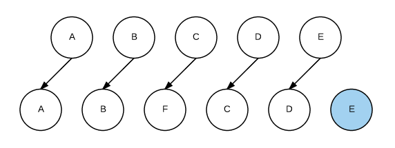
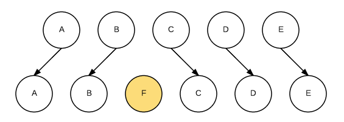
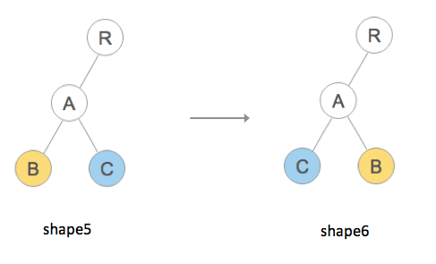

React
- Introduce
- React DOM Diff
- Redux
React 是什么 是解决什么问题的
View in MV*
React is, in our opinion, the premier way to build big, fast Web apps with JavaScript. It has scaled very well for us at Facebook and Instagram.
1.声明式渲染(Declarative)
React可以轻松创建交互式用户界面。 为应用程序中的每个状态设计简单的视图，当数据更改时，React将有效地更新和渲染正确的组件。 声明性视图使您的代码更可预测，更易于调试。
所谓声明式就是把整个渲染过程归纳抽离出来,让我们更关注描述我们想要什么
2.组件式的(Component-Based)
构建管理自己状态的封装组件，然后将其组合成复杂的UI。 由于组件逻辑是用JavaScript而不是模板编写的，因此可以通过应用程序轻松传递丰富的数据，并将状态保留在DOM之外。
React.createElement
React.createElement(
string/ReactClass type,
[object props],
[children ...]
)
JSX Prevents Injection Attacks
By default, React DOM escapes any values embedded in JSX before rendering them. Thus it ensures that you can never inject anything that’s not explicitly written in your application. Everything is converted to a string before being rendered. This helps prevent XSS (cross-site-scripting) attacks.
"React elements are immutable. Once you create an element, you can’t change its children or attributes. An element is like a single frame in a movie: it represents the UI at a certain point in time."
设计 React 的核心前提是认为 UI 只是把数据通过映射关系变换成另一种形式的数据。同样的输入必会有同样的输出。
"the only way to update the UI is to create a new element, and pass it to ReactDOM.render()."
demo2
Components and Props
"Whether you declare a component as a function or a class, it must never modify its own props."
See demo3
State and Lifecycle
See demo4
So far we have only learned one way to update the UI.
Converting a Function to a Class
You can convert a functional component like Clock to a class in five steps:
- 1.Create an ES6 class, with the same name, that extends React.Component.
- 2.Add a single empty method to it called render().
- 3.Move the body of the function into the render() method.
- 4.Replace props with this.props in the render() body.
- 5.Delete the remaining empty function declaration.
DOM DIFF
Web界面由DOM树来构成，当其中某一部分发生变化时，其实就是对应的某个DOM节点发生了变化。在React中，构建UI界面的思路是由当前状态决定界面。前后两个状态就对应两套界面，然后由React来比较两个界面的区别，这就需要对DOM树进行Diff算法分析。即给定任意两棵树，找到最少的转换步骤。但是标准的的Diff算法复杂度需要O(n^3)，这显然无法满足性能要求。要达到每次界面都可以整体刷新界面的目的，势必需要对算法进行优化。这看上去非常有难度，然而Facebook工程师却做到了，他们结合Web界面的特点做出了两个简单的假设，使得Diff算法复杂度直接降低到O(n)
React DOM DIFF
1.两个相同组件产生类似的DOM结构，不同的组件产生不同的DOM结构
2.对于同一层次的一组子节点，它们可以通过唯一的id进行区分。
为了在树之间进行比较，我们首先要能够比较两个节点，在React中即比较两个虚拟DOM节点，当两个节点不同时，应该如何处理。这分为两种情况：（1）节点类型不同 ，（2）节点类型相同，但是属性不同。先看下比较方式:
逐层比较
React只会对相同颜色方框内的DOM节点进行比较，即同一个父节点下的所有子节点。当发现节点已经不存在，则该节点及其子节点会被完全删除掉，不会用于进一步的比较。这样只需要对树进行一次遍历，便能完成整个DOM树的比较。
不同类型节点比较
当在树中的同一位置前后输出了不同类型的节点，React直接删除前面的节点，然后创建并插入新的节点。当一个节点从div变成span时，简单的直接删除div节点，并插入一个新的span节点。这符合我们对真实DOM操作的理解。需要注意的是，删除节点意味着彻底销毁该节点，而不是再后续的比较中再去看是否有另外一个节点等同于该删除的节点。如果该删除的节点之下有子节点，那么这些子节点也会被完全删除，它们也不会用于后面的比较。这也是算法复杂能够降低到O（n）的原因。看下demo演示

相同类型节点比较
React会对相同类型节点属性进行重设从而实现节点的转换
列表节点比较
上面介绍了对于不在同一层的节点的比较，即使它们完全一样，也会销毁并重新创建。那么当它们在同一层时，又是如何处理的呢？这就涉及到列表节点的Diff算法。相信很多使用React的同学大多遇到过这样的警告

这是React在遇到列表时却又找不到key时提示的警告。虽然无视这条警告大部分界面也会正确工作，但这通常意味着潜在的性能问题。因为React觉得自己可能无法高效的去更新这个列表。
列表节点的操作通常包括添加、删除和排序。例如下图，我们需要往B和C直接插入节点F，在jQuery中我们可能会直接使用$(B).after(F)来实现。而在React中，我们只会告诉React新的界面应该是A-B-F-C-D-E，由Diff算法完成更新界面。

这时如果每个节点都没有唯一的标识，React无法识别每一个节点，那么更新过程会很低效，即，将C更新成F，D更新成C，E更新成D，最后再插入一个E节点。效果如下图所示：
可以看到，React会逐个对节点进行更新，转换到目标节点。而最后插入新的节点E，涉及到的DOM操作非常多。而如果给每个节点唯一的标识（key），那么React能够找到正确的位置去插入新的节点，入下图所示：
对于列表节点顺序的调整其实也类似于插入或删除，下面结合示例代码我们看下其转换的过程。
有人说"如果你不知道是否需要 Redux，那就是不需要它。"
React : View in MV*
React 只是DOM的一个抽象层 并不是WEB应用的完整解决方案。 代码结构 、组件间的通信 没有涉及
Redux 适用场景: 多交互, 多数据源
从组件的角度看:
- 某个组件的状态，需要共享
- 某个状态需要在任何地方都可以拿到
- 一个组件需要改变全局状态
- 一个组件需要改变另一个组件的状态
（1）Web 应用是一个状态机，视图与状态是一一对应的。
（2）所有的状态，保存在一个对象里面。